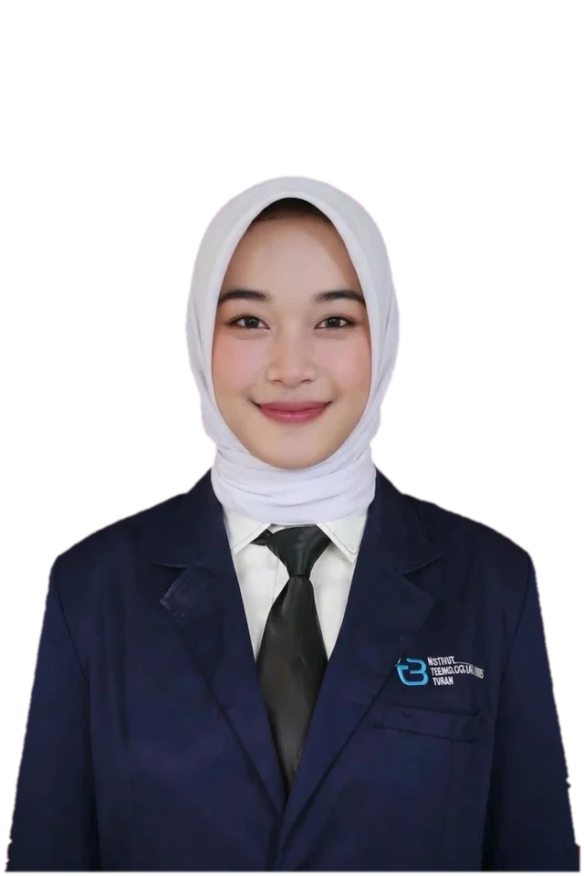
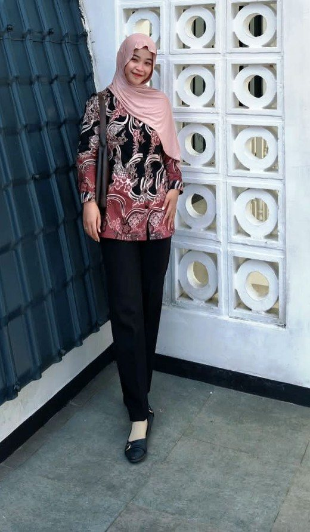
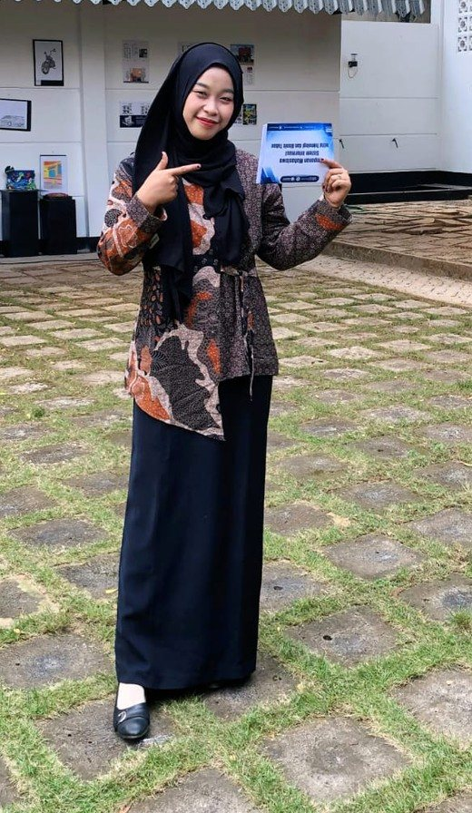
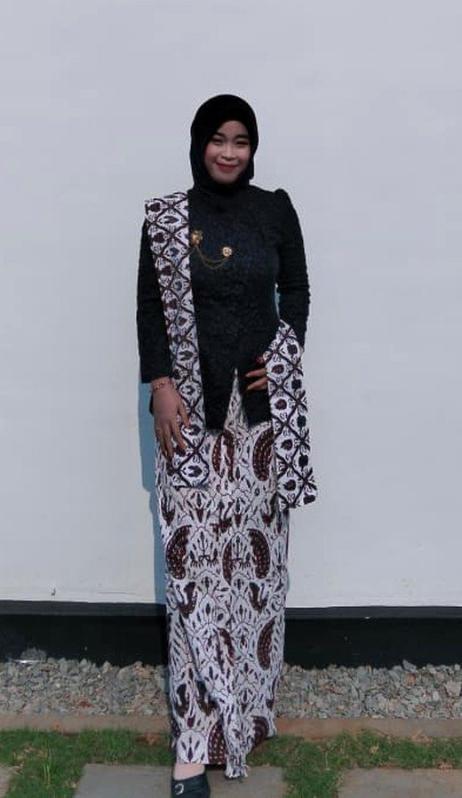
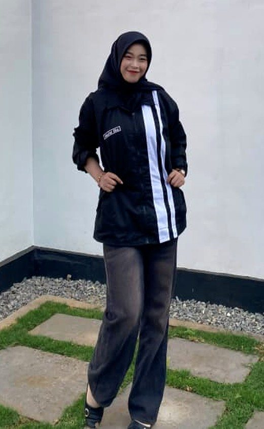
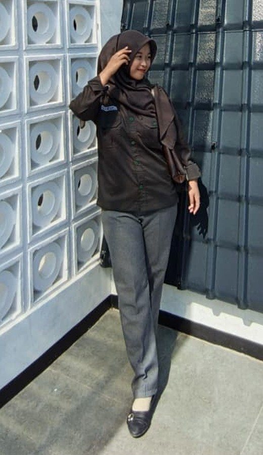

Mengubah masalah nyata menjadi sistem yang bekerja.
Dari Puskesmas, pesantren, sampai sekolah dasar: saya menganalisis kebutuhannya, merancang sistemnya, membangun aplikasinya, lalu menuliskan dan mengajarkan ilmunya lewat buku, jurnal, dan video.

Tentang Saya
Mahasiswa Sistem Informasi semester 5, ITB Tuban



Membangun sistem, menuliskannya, lalu mengajarkannya
Saya terbiasa menganalisis kebutuhan pengguna, merancang alur sistem dan basis data, membangun aplikasi, lalu menuliskannya menjadi dokumentasi, buku, dan jurnal ilmiah. Delapan sistem informasi telah saya kerjakan untuk instansi nyata, di antaranya UPTD Puskesmas Kenduruan, pondok pesantren, dan sekolah dasar.
Di luar layar, saya mengajar, memimpin organisasi, dan beberapa kali menjadi MC, sehingga nyaman berkomunikasi dengan banyak orang.
2024 – estimasi lulus 2028 | IPK 3,80
Madrasah Aliyah, Pondok Pesantren Assalam Bangilan | Lulus 2023
Cara Saya Bekerja
Analisis
Menggali kebutuhan pengguna dan memetakan masalah yang ingin diselesaikan.
Perancangan
Merancang alur dan basis data dengan UML, ERD, flowchart, serta antarmuka di Figma.
Pembangunan
Membangun aplikasi web, desktop, atau Android sesuai rancangan.
Dokumentasi
Menuliskan hasilnya menjadi dokumentasi, buku, jurnal, dan video tutorial.
Perjalanan Semester
Dibaca seperti riwayat commit: tiap semester menambah sesuatu yang nyata.
Coba Terminal
Ketik help untuk melihat perintah yang tersedia.
Portofolio
Proyek, karya tulis, keahlian, dan pengalaman saya.
Proyek Lainnya


Channel YouTube @mmylnni
26 video yang awalnya tugas kuliah dan saya manfaatkan untuk mengabadikan ilmu: NetBeans, topologi jaringan, Android Studio, hingga implementasi sistem informasi SIKAP.
Buka channel →Hubungi Saya
Terbuka untuk magang, pekerjaan, freelance, dan kolaborasi. Tulis pesan, lalu kirim lewat WhatsApp atau email.